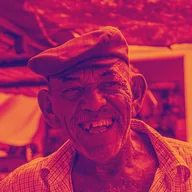

গ্রেডিয়েন্ট ম্যাপ

ব্রাইটনেস অনুযায়ী তিনটি কালারের মধ্য দিয়ে ইমেজকে রিকালার করে, রিপিট ও ফেজসহ। স্কেল ব্রাইটনেস ফলাফলকে ছবির নিজের ব্রাইটনেস দিয়ে গুণ করে।
সেটিংস
| সেটিং | ধরন | রেঞ্জ | ডিফল্ট |
|---|---|---|---|
| শ্যাডো | কালার | – | #1B1464 |
| মিডটোনস | কালার | – | #D4145A |
| হাইলাইটস | কালার | – | #FBB03B |
| রিপিট | সংখ্যা | 0.1 থেকে 10 | 1 |
| ফেজ | সংখ্যা | 0 থেকে 1 | 0 |
| রিভার্স | চালু বা বন্ধ | – | বন্ধ |
| স্কেল ব্রাইটনেস | চালু বা বন্ধ | – | বন্ধ |
| অপাসিটি | সংখ্যা | 0 থেকে 1 | 1 |